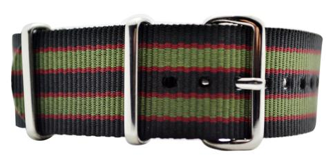
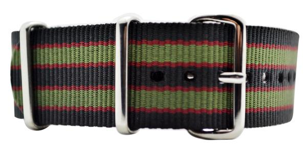
'Classic Bond' NATO Strap
£9.95
This strap is a homage to the strap that Sean Connery wore in 'Goldfinger'. A very cool vintage design and the heritage that goes with strap makes it extra special. Currently available in 18mm, 20mm and 22mm. All of our ballistic nylon straps are made...
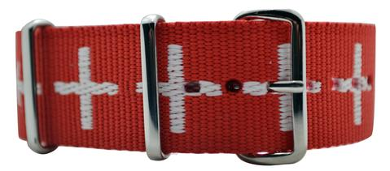

'The Swiss' NATO Strap
£9.95
It's true that most of the highly respected watches and watch movements come from Switzerland. If you own a Swiss watch or have Swiss movement in your watch, this strap can add that extra touch of heritage. Currently available in 18mm and 22mm. All of...
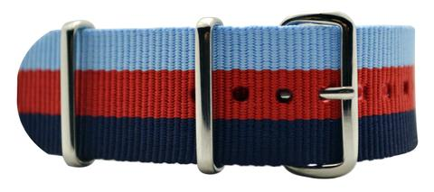

'Silverstone' NATO Strap
£9.95
A NATO strap drawing its colours from racing history. The three colours work together to make a colour scheme which nods its head to racing history while looking especially good on anyone's wrist. Currently available in 18mm, 20mm and 22mm. All of our ballistic nylon...
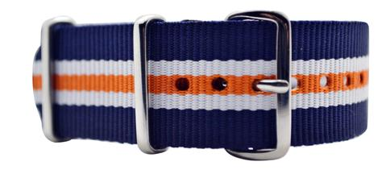

'The Heritage' NATO Strap
£9.95
This colour scheme works surprisingly well with watches and has been popular with many watch styles. The main navy blue bordering the strap is complemented nicely with the striking orange that runs through the middle. Currently available in 18mm, 20mm and 22mm. All of our...
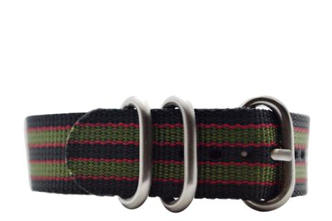

'Classic Bond' Zulu Strap
£12.95
Our homage to the NATO strap Sean Connery wore in Goldfinger. We chose to add this design to the Zulu strap for the best combination of style and durability. All of our Zulu straps are made with the highest quality ballistic nylon which has been...
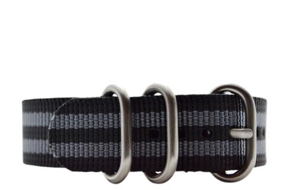

'Modern Bond' Zulu Strap
£12.95
The 'Modern Bond' ballistic Zulu strap features a double regimental black/grey style. The name comes from the reappearance of the NATO strap in recent Bond movies and we have decided to add this design to our Zulu's as well. All of our Zulu straps are...
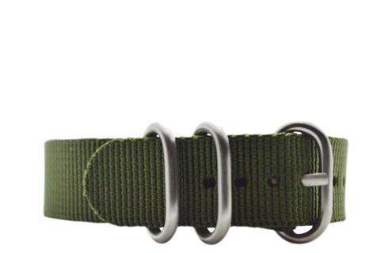

'The Military Khaki' Zulu Strap
£12.95
The most popular single colour Zulu is the 'The Military Khaki' NATO strap. This particular green works extremely well with all watches, perfect for those who want the utility of a NATO strap but in a subtle colour. Currently available in 20mm and 22mm. All...
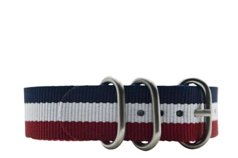

'The Patriot' Zulu Strap
£12.95
An iconic design of red, white and blue on our Zulu straps is one cool combination. However you want to see the colours, be it an American, British or French flag, the colours add a subtle touch of style to any watch. All of...
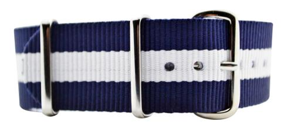

'The Atlantic' NATO Strap
£9.95
A crisp and simple design. The classic Single Regimental design with navy blue and white work especially well together. Currently available in 18mm, 20mm and 22mm. All of our ballistic nylon straps are made with the highest quality ballistic nylon which has been ultrasonically welded...
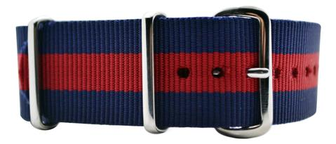

'The Officer' NATO Strap
£9.95
Based on the colour schemes of officers in the British Army, this Single Regimental NATO strap features a border of navy blue and a rich red running through the middle. Currently available in 18mm, 20mm, 22mm, and 24mm. All of our ballistic nylon straps are...
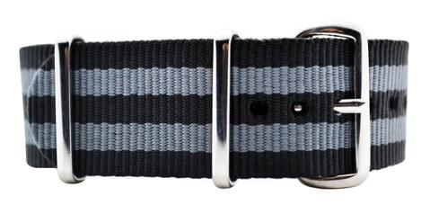

The 'Modern Bond' NATO Strap
£9.95
The 'Modern Bond' NATO strap features a double regimental black/grey style. The name comes from the reappearance of the NATO strap in recent Bond movies, the classic version can be found here. Currently available in 16mm, 18mm, 20mm, 22mm 24mm and 26mm. All of our ballistic nylon straps...
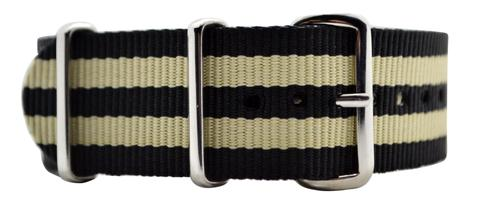

'The Marlow' NATO Strap
£9.95
'The Marlow' NATO strap features a Double Regimental design with a black and cream colour scheme. This is a subtle strap that adds that extra touch of finesse to any outfit. Currently available in 18mm, 20mm and 22mm. All of our ballistic nylon straps are...
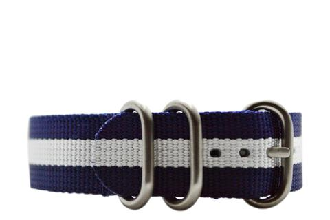

'The Atlantic' Zulu Strap
£12.95
A crisp and simple design. The classic Single Regimental design with navy blue and white work especially well together. All of our Zulu straps are made with the highest quality ballistic nylon which has been ultrasonically welded for ultimate durability and comfort. They are then...
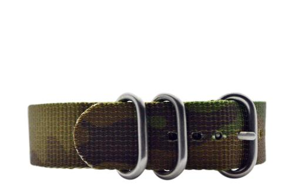

'Wood Camouflage' Zulu Strap
£12.95
There is something very appealing about the camouflage design. We developed our own camouflage design by drawing inspiration from British woods, mixing colours such as everest green and dark brown which adds a great military feel to any watch. All of our 'Wood Camouflage' Zulu straps feature the...
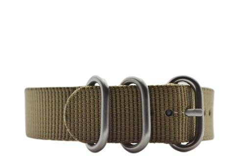

Desert Tan Zulu Strap
£12.95
Inspired by the the colours used by the military in the desert we added this design to our inventory of Zulu's for a strap which is understated but adds a new element to all watches. All of our Zulu straps are made with the highest quality...
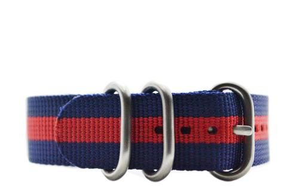

'The Officer' Zulu Strap
£12.95
Two colours steeped in military history work very well in the Zulu strap. The navy blue and red are a natural fit for the 'Single Regimental' which comes from the officers uniform in the British Army. Currently available in 20mm and 22mm. All of our Zulu straps...